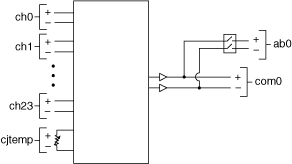

提交有关此主题的反馈。
提交有关此主题的反馈。 访问ni.com/support以获得技术支持。
访问ni.com/support以获得技术支持。将 NI PXI-2501 用作2 线24×1放大 多路复用器时，请使用 NI TB-2605 接线端子连接您的信号。在此拓扑中，您可以连接到冷端传感器通道以进行冷端补偿。下图是该模式下 NI PXI-2501 的示意图。
|  |
此拓扑中的 NI PXI-2501 的工作方式与2 线 24×1 多路复用器拓扑相同，只是可以使用上图所示的放大器。
提交有关此主题的反馈。 访问ni.com/support以获得技术支持。